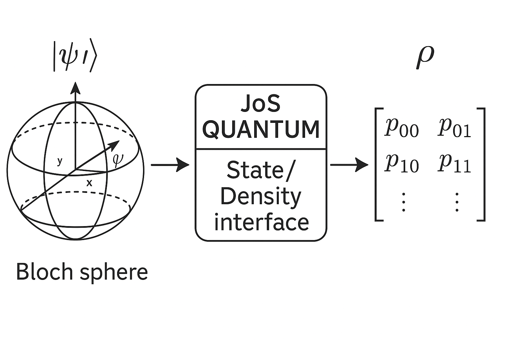
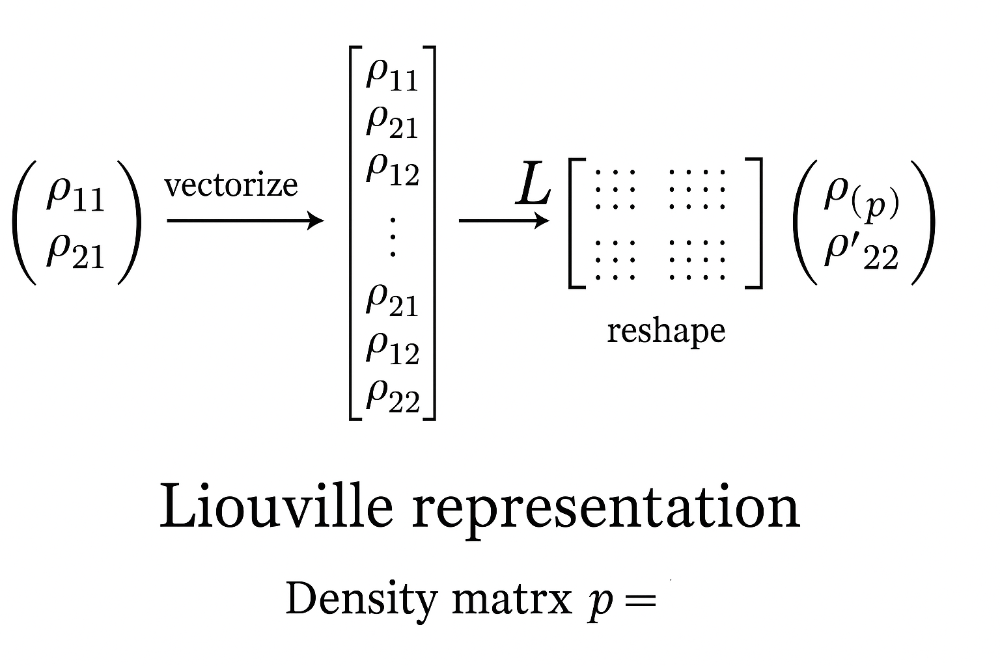
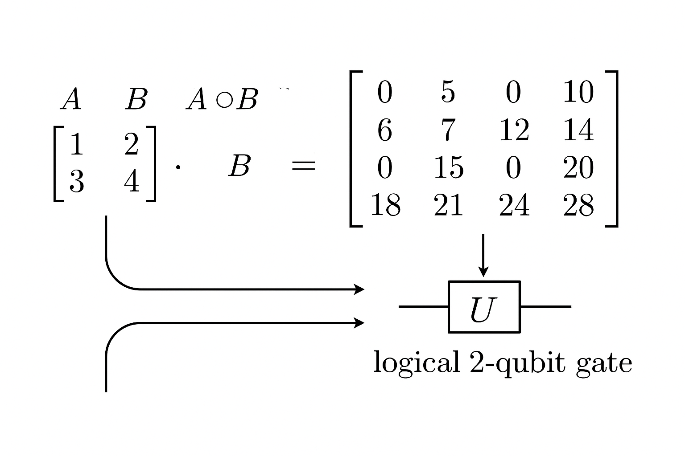
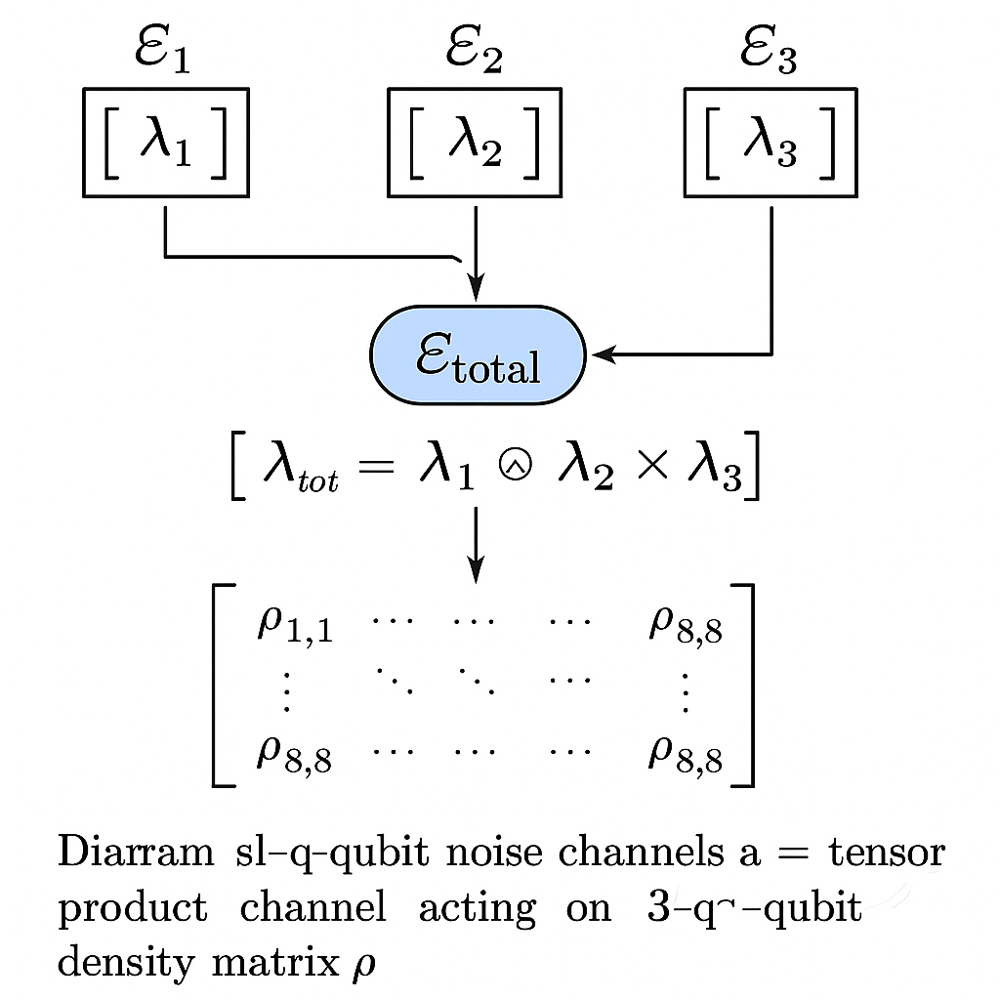
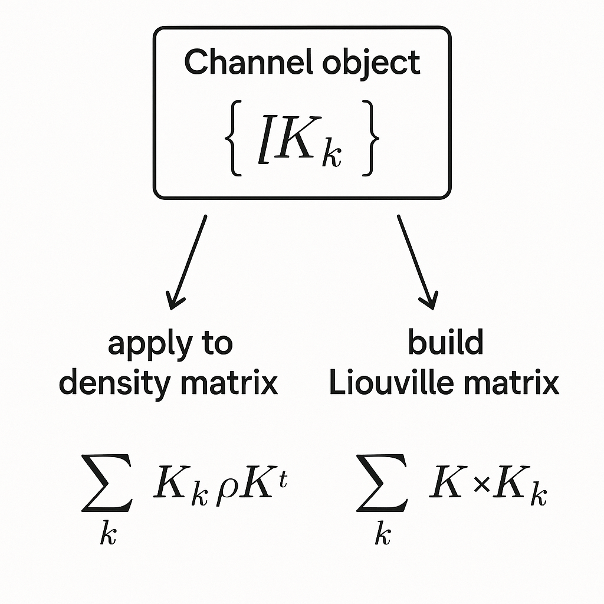
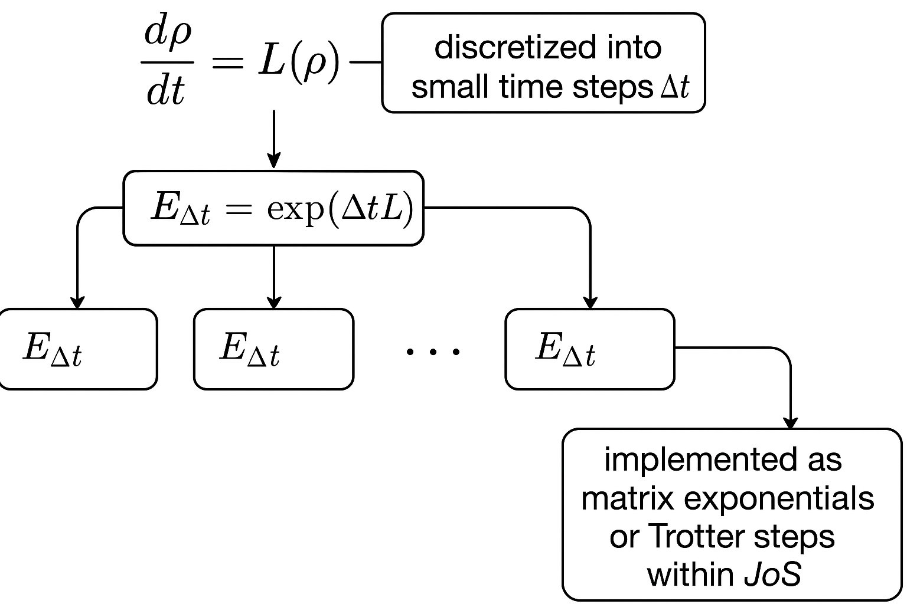
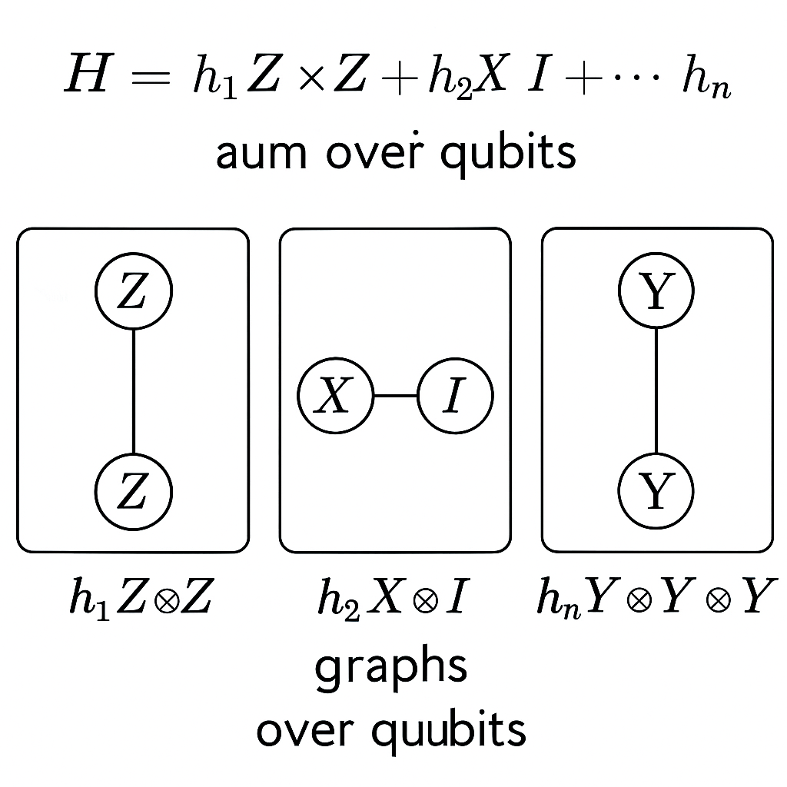
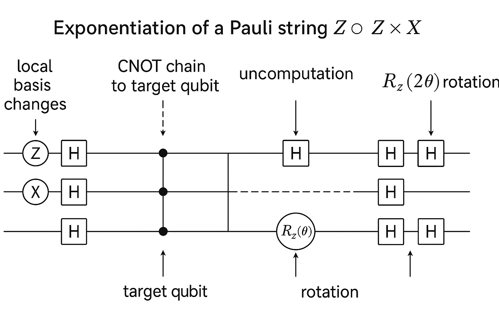
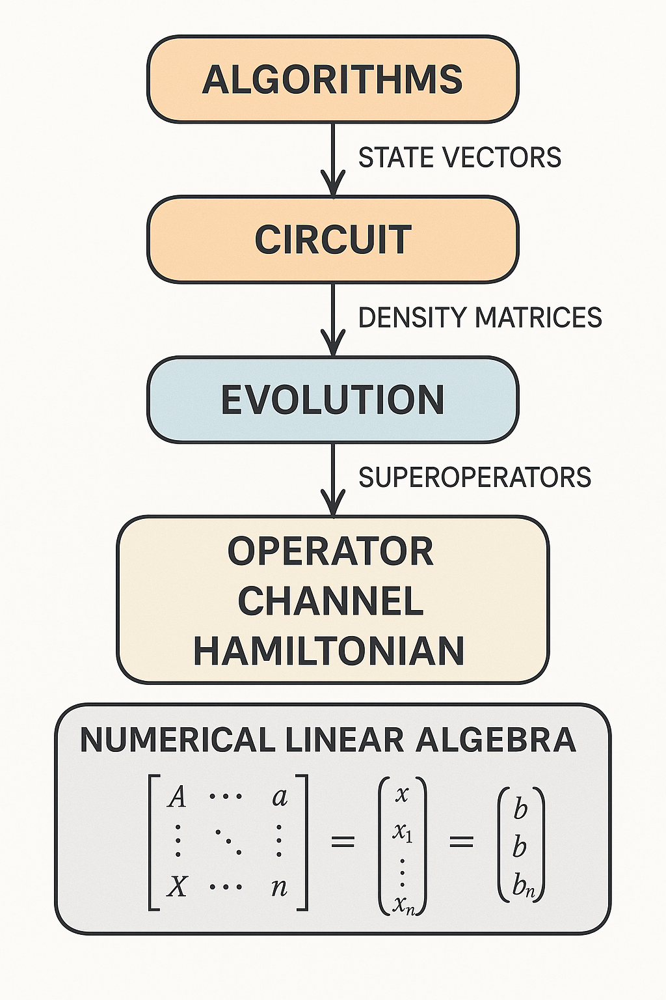
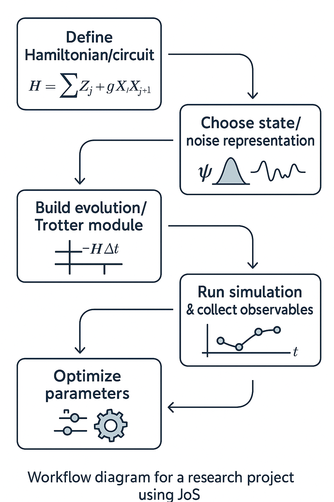

Generated by ChatGPT on 2025-12-08
本講聚焦於從「數學算符形式主義」連接至「JoS QUANTUM 的程式與模組架構」，並示範如何在 JoS 平台上以 算符、超算符與雜訊通道 的觀點，構造可擴展、可重用的量子運算模組。內容分為：
在多數量子計算教科書中，量子電路通常以純態向量 \( \lvert \psi \rangle \in \mathbb{C}^{2^n} \) 為主。然而，在實際演算法與噪聲分析中，我們經常需要密度矩陣形式 \[ \rho \in \mathbb{C}^{2^n \times 2^n}, \quad \rho \ge 0, \quad \mathrm{Tr}(\rho) = 1. \] JoS QUANTUM 平台（以下簡稱 JoS）在設計上同時考慮這兩層抽象，許多模組可以用「狀態向量」與「密度矩陣」雙重方式來建模與模擬。
基本對應為：
在 JoS 中常見的模式之一，是在「高階抽象」層以算符與通道的觀點設計演算法，然後在「模擬或執行層」選擇實作為 state vector simulator 或 density matrix simulator。這要求我們對兩種形式的線性代數結構都非常熟悉。

with a Bloch sphere and on the right a density matrix rho represented as a matrix; arrows from both to a JoS QUANTUM module box labeled "State / Density interface".">對於 \(n\) 量子位系統，所有可行的演化與測量都可視為 Hilbert 空間 \[ \mathcal{H} = \bigotimes_{k=1}^n \mathbb{C}^2 \] 上的線性算符。一般而言：
在最基本的計算基測量下，對第 \(j\) 個量子位作測量可視為作用於密度矩陣的超算符，其結果是： \[ \rho \ \mapsto\ \frac{(P_{b}^{(j)} \otimes I_{\text{rest}})\, \rho\, (P_{b}^{(j)} \otimes I_{\text{rest}})}{\mathrm{Tr}\big[(P_{b}^{(j)} \otimes I_{\text{rest}})\rho\big]}, \] 其中 \(P\) 的上標小括號 \(j\)，下標 \(b\)，等於 ket \(b\) 乘上 bra \(b\)。-->\( P_{b}^{(j)} = \lvert b \rangle \langle b \rvert \) 為第 \(j\) 個位元的投影算符，\(b \in \{0,1\}\)。
JoS 在實作上可能將「測量」視為對 state vector 或 density matrix 的更新操作；在抽象模組設計時，最好將其視為「非線性後處理」：一次測量包括
因此測量在數學上是 CP（完全正）但非 trace-preserving 的「分支式」超算符，而「忽略測量結果」時，總通道又是 CPTP 通道（詳見 3.3）。
JoS 在進階應用（如雜訊分析、開放量子系統）中，自然會涉及「對密度矩陣作用的線性映射」： \[ \mathcal{E}: \mathcal{B}(\mathcal{H}) \to \mathcal{B}(\mathcal{H}). \] 為了在程式層面方便處理，常用的作法是引入向量化（vectorization）：
對一個矩陣 \(A \in \mathbb{C}^{d \times d}\)，定義向量化操作 \(\mathrm{vec}(A)\) 為將 \(A\) 的列或行「攤平」成一個 \(d^2\)-維向量。常見慣例（column-major）為 \[ \mathrm{vec}(A) = (A_{11}, A_{21}, \dots, A_{d1}, A_{12}, A_{22}, \dots, A_{d2}, \dots, A_{1d}, \dots, A_{dd})^\top. \] 如此一來，若通道 \(\mathcal{E}\) 為線性映射，就可表示為一個 \(d^2 \times d^2\) 的矩陣 \( \mathcal{L} \)（Liouville 表示）： \[ \mathrm{vec}\big(\mathcal{E}(\rho)\big) = \mathcal{L}\, \mathrm{vec}(\rho). \]
在 JoS 的高階線性代數模組中，這種「將超算符視為矩陣」的觀點非常重要，因為：

在 \(n\) 量子位系統中，大多數運算和雜訊都具有「局域」或「分解」結構。例如，單量子位閘 \(U\) 作用在第 \(k\) 個量子位，其在整體 Hilbert 空間上的算符為 \[ U^{(k)} = I_2^{\otimes (k-1)} \otimes U \otimes I_2^{\otimes (n-k)}, \] 其中 \(I_2\) 為 \(2 \times 2\) 單位矩陣。
在線性代數中，此種結構自然對應到 Kronecker 積。若 \(A \in \mathbb{C}^{m \times n}\), \(B \in \mathbb{C}^{p \times q}\)，則 \[ A \otimes B = \begin{pmatrix} a_{11} B & a_{12} B & \cdots & a_{1n} B \\ a_{21} B & a_{22} B & \cdots & a_{2n} B \\ \vdots & \vdots & \ddots & \vdots \\ a_{m1} B & a_{m2} B & \cdots & a_{mn} B \\ \end{pmatrix} \in \mathbb{C}^{mp \times nq}. \] 對量子計算而言，這就是 Hilbert 空間張量積在矩陣上的實現。
關鍵性質包括：
這些性質在 JoS 中對「多體 Hamiltonian 的構造」、「多量子位通道」、「噪聲模型的張量積組合」都扮演重要角色。實務上，JoS 很可能透過底層數值庫對 Kronecker 積做最佳化實作。

假設我們想在 JoS 中建立一個由多個單量子位閘與雙量子位閘組成的電路。數學上，電路中每一層（同時作用在不同量子位上的互不干涉閘）可表示為 \[ U_{\text{layer}} = \bigotimes_{k=1}^{n} U_k, \] 其中某些 \(U_k\) 是單位矩陣（表示該量子位在此層不作用）。
以三量子位為例，若第一層為 \(H\) 作用於第 1 位、\(X\) 作用於第 3 位，則算符為 \[ U_{\text{layer}} = H \otimes I_2 \otimes X. \] JoS 若提供「閘集合模組」與「電路組裝模組」，內部基本運算即是這類 Kronecker 積操作。軟體上可用一個陣列記錄每個 qubit 在該層使用到哪個單位閘，然後動態建構對應的整體算符。
對雙量子位閘（例如 CNOT 作用於 qubit 1 和 2），其在三量子位系統中可表示為 \[ \mathrm{CNOT}_{1,2}^{(3)} = \mathrm{CNOT} \otimes I_2, \] 若 CNOT 的矩陣定義為 \(4 \times 4\) 矩陣，以 \(\lvert 00 \rangle, \lvert 01 \rangle, \lvert 10 \rangle, \lvert 11 \rangle\) 為基底。
不僅是「單位閘」，噪聲通道也可以以局域方式組裝。若對每個量子位都有通道 \[ \mathcal{E}_k: \mathcal{B}(\mathbb{C}^2) \to \mathcal{B}(\mathbb{C}^2), \] 則整體通道為 \[ \mathcal{E}_{\text{tot}} = \bigotimes_{k=1}^n \mathcal{E}_k, \] 作用在 \(\rho \in \mathcal{B}(\mathcal{H})\) 上。
在 Liouville 表示下，若 \(\mathcal{E}_k\) 對應到矩陣 \(\mathcal{L}_k\)，則 \[ \mathcal{L}_{\text{tot}} = \bigotimes_{k=1}^n \mathcal{L}_k. \] 這為 JoS 實作「獨立局域噪聲」提供非常自然的矩陣運算模式：可針對單量子位的 \(4\times 4\) Liouville 矩陣（因為 \(2^2 = 4\)），再使用 Kronecker 積組裝出 \(4^n \times 4^n\) 的超算符矩陣。

考慮單量子位振幅衰減（amplitude damping）通道 \(\mathcal{A}_\gamma\)，其 Kraus 算符為
\[ K_0 = \begin{pmatrix} 1 & 0 \\ 0 & \sqrt{1-\gamma} \end{pmatrix},\quad K_1 = \begin{pmatrix} 0 & \sqrt{\gamma} \\ 0 & 0 \end{pmatrix}, \]其中 \(\gamma \in [0,1]\)。其作用為
\[ \mathcal{A}_\gamma(\rho) = K_0 \rho K_0^\dagger + K_1 \rho K_1^\dagger. \]在兩量子位系統上，若兩個量子位都經歷相同衰減，則通道為 \[ \mathcal{A}_\gamma^{\otimes 2} = \mathcal{A}_\gamma \otimes \mathcal{A}_\gamma, \] 其 Kraus 算符集合為 \(\{ K_i \otimes K_j \}_{i,j=0,1}\)。在 JoS 實作中，可以：
數學上，這個張量積結構保證了通道仍為 CPTP（完全正、跡保持），因為：
在密度矩陣形式主義下，物理可行的演化必須是 CPTP 通道：
這樣的映射完整描述了所有「開放量子系統」的馬可夫性時間演化（在一定假設下）。在 JoS 的雜訊模組中，通道往往以 Kraus 表示 或 主方程（Lindblad）給出。
任意 CPTP 通道都可寫為
\[ \mathcal{E}(\rho) = \sum_{k} K_k \rho K_k^\dagger, \]其中 Kraus 算符 \(K_k\) 滿足
\[ \sum_{k} K_k^\dagger K_k = I. \]在軟體層面，這提供一個極佳的物件設計模板：一個「通道物件」可以儲存一組 \( \{ K_k \} \)，並提供方法：

考慮二元 POVM \(\{ M_0, M_1 \}\)，滿足 \(M_0 + M_1 = I\)。對於每一個結果 \(b\)，其「分支通道」為 \[ \mathcal{E}_b(\rho) = \sqrt{M_b} \rho \sqrt{M_b}, \] 這是 CP 但滿足 \[ \mathrm{Tr}[\mathcal{E}_b(\rho)] = \mathrm{Tr}[M_b \rho] = p_b \le 1. \]
總通道（忽略結果）為 \[ \mathcal{E}(\rho) = \sum_{b=0,1} \mathcal{E}_b(\rho) = \sum_{b=0,1} \sqrt{M_b} \rho \sqrt{M_b} \] 且 \[ \mathrm{Tr}[\mathcal{E}(\rho)] = \mathrm{Tr}[\rho], \] 因此是 CPTP。
在 JoS 的資料結構中，可以區分：
這種分層設計有助於實作如「條件性電路」（conditional circuits）以及「重複直到成功」（repeat-until-success）策略。
JoS 若支援開放系統時間連續演化，則自然會使用 Lindblad 主方程： \[ \frac{d\rho}{dt} = \mathcal{L}(\rho) = -i[H,\rho] + \sum_j \left( L_j \rho L_j^\dagger - \frac{1}{2}\{L_j^\dagger L_j, \rho\} \right), \] 其中 \(H\) 為有效 Hamiltonian，\(L_j\) 為 Lindblad 跳躍算符。
對於小時間步長 \(\delta t\)，可近似為離散時間通道 \[ \rho(t+\delta t) \approx \mathcal{E}_{\delta t}(\rho(t)) = e^{\delta t\, \mathcal{L}}(\rho(t)). \] 在數值層面，JoS 可能使用：

在 NISQ 演算法與量子模擬中，我們常處理多體 Hamiltonian，例如 \[ H = \sum_{\alpha} h_\alpha P_\alpha, \] 其中每個 \(P_\alpha\) 是 Pauli 字串： \[ P_\alpha = \sigma_{\alpha_1}^{(1)} \otimes \sigma_{\alpha_2}^{(2)} \otimes \cdots \otimes \sigma_{\alpha_n}^{(n)}, \] \(\sigma_{\alpha_j}^{(j)} \in \{I,X,Y,Z\}\) 作用在第 \(j\) 個 qubit。
這種 Pauli 展開非常適合 JoS 的模組化實作：

對於時間獨立 Hamiltonian \(H = H_1 + H_2 + \dots + H_m\)，時間演化為 \[ U(t) = e^{-iHt}. \] 若項之間不對易，直接指數化困難，便使用 Trotter–Suzuki 分解。最簡單的一階 Trotter 展開為： \[ e^{-i(H_1+\cdots+H_m)t} \approx \left[ e^{-iH_1 \frac{t}{N}} e^{-iH_2 \frac{t}{N}} \cdots e^{-iH_m \frac{t}{N}} \right]^N, \] 誤差為 \(O(t^2/N)\)。
更高階的對稱 Trotter（second-order）為： \[ e^{-i(H_1+\cdots+H_m)t} \approx \left[ e^{-iH_1 \frac{t}{2N}} e^{-iH_2 \frac{t}{2N}} \cdots e^{-iH_m \frac{t}{N}} \cdots e^{-iH_2 \frac{t}{2N}} e^{-iH_1 \frac{t}{2N}} \right]^N, \] 誤差為 \(O(t^3/N^2)\)。
JoS 若提供「Trotter 化模組」，其主要任務是：
對單一 Pauli 字串 \(P\)，例如
\[ P = Z^{(1)} \otimes Z^{(2)} \otimes X^{(3)}, \]其指數 \(e^{-i\theta P}\) 可以藉由一連串 Clifford 與單一軸旋轉實作。數學上，因為 \(P^2 = I\)，我們有
\[ e^{-i\theta P} = \cos\theta \, I - i \sin\theta \, P. \]在實際電路分解中，對於一個 k 量子位 Pauli 字串，可經由本地 Clifford 變換（將每個 \(\{X,Y,Z\}\) 型轉換成 \(Z\)），再使用一個多體 Z–Z–…–Z 交互作用的受控旋轉來實作。典型過程為：
這樣的分解可在 JoS 中抽象為一個「PauliExponentiation」模組：給定 \(P\) 與 \(\theta\)，自動產生等價電路。對 Trotter 模組而言，只需將 Hamiltonian 拆為 Pauli 字串，再呼叫此模組即可。

從數學上，一階 Trotter 誤差可以以 BCH（Baker–Campbell–Hausdorff）展開估計。對 \(H = H_1 + H_2\)， \[ e^{-i(H_1+H_2)t} - \big(e^{-iH_1 t/N} e^{-iH_2 t/N}\big)^N = O\left(\frac{t^2}{N} \, \Vert [H_1,H_2] \Vert \right). \] 一般 \(m\) 項時，誤差會涉及雙重 commutator 和更高階項。量化而言，若希望演化誤差 \(\epsilon\) 以下，則取 \[ N \gtrsim \frac{t^2}{\epsilon} \, \max_{\alpha,\beta} \Vert [H_\alpha, H_\beta] \Vert. \]
在 JoS 的高階 API 中，Trotter 模組可提供：
整理前面幾節，我們可以將 JoS 的關鍵抽象與數學對應表如下：
| JoS 抽象類別（示意） | 數學對應 | 典型維度 |
|---|---|---|
| QubitRegister / StateVector | \(\lvert \psi \rangle \in \mathbb{C}^{2^n}\) | \(2^n\) |
| DensityMatrix | \(\rho \in \mathbb{C}^{2^n \times 2^n}\), \(\rho \ge 0\), \(\mathrm{Tr}(\rho)=1\) | \(2^n \times 2^n\) |
| Gate / Operator | 單位算符 \(U \in \mathbb{C}^{2^n \times 2^n}\) | \(2^n \times 2^n\) |
| Channel | CPTP 映射 \(\mathcal{E}: \mathcal{B}(\mathcal{H}) \to \mathcal{B}(\mathcal{H})\) | 作用於 \(2^n \times 2^n\) |
| LiouvilleSuperOp | 向量化後之 \(\mathcal{L} \in \mathbb{C}^{4^n \times 4^n}\) | \(4^n \times 4^n\) |
| Hamiltonian / PauliSum | 自伴算符 \(H = \sum_\alpha h_\alpha P_\alpha\) | \(2^n \times 2^n\) |
| Evolution / TrotterEngine | 實作 \(e^{-iHt}\) 近似與通道 \(e^{t\mathcal{L}}\) | 依模擬模式而定 |

從研究者角度，在 JoS 上開發量子演算法或物理模型，通常會遵循幾個設計原則：
以下是一個典型的 JoS 研究工作流程（概念層面）：

本講從數學角度梳理了 JoS QUANTUM 平台中幾個核心抽象：狀態、算符、超算符與通道，並說明了 Kronecker 結構如何自然支撐多量子位演化與雜訊建模；接著闡述了 CPTP 通道的 Kraus 與 Liouville 表示，以及 Lindblad 主方程與 Trotter–Suzuki 分解如何在 JoS 中實作為時間演化與雜訊模組。
對於博士生或研究者而言，理解這些數學結構與 JoS 軟體架構的對應，有助於：
在接下來的課程中，將進一步探討如何在 JoS QUANTUM 上實作具體的變分量子演算法（VQE、QAOA）、如何結合 Classical Optimizer 與量子模組，並深化對雜訊與誤差緩解技術的實作層細節。
逐字稿下載：ChatGPT_zh_L03_第_3_講_JoS_QUANTUM量子計算平台主題_3.txt
完整音檔：
Segment 1:
Segment 2:
Segment 3:
Segment 4:
Segment 5:
Segment 6:
Segment 7:
Segment 8:
Segment 9:
Segment 10:
Segment 11: